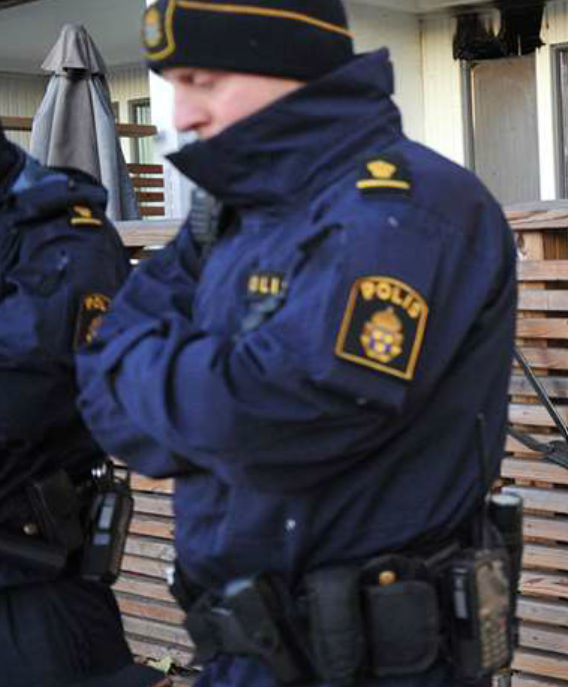
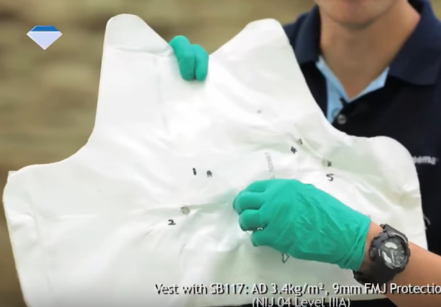
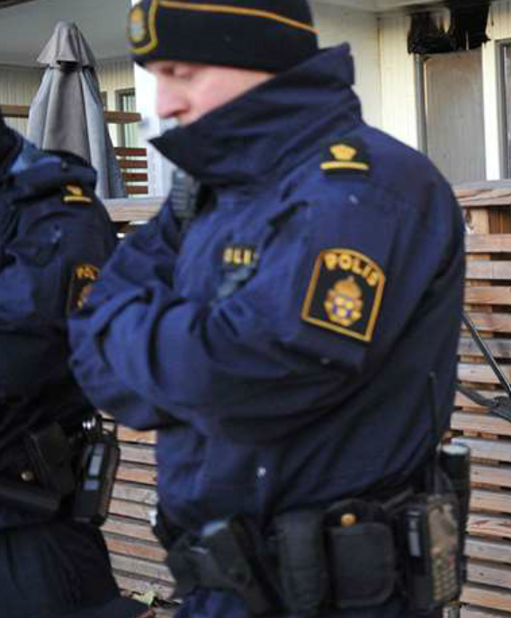
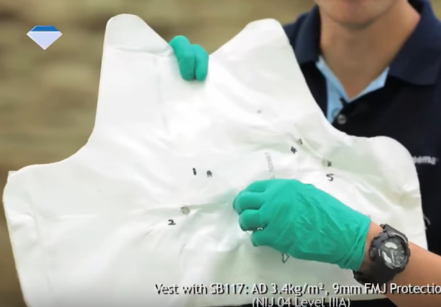
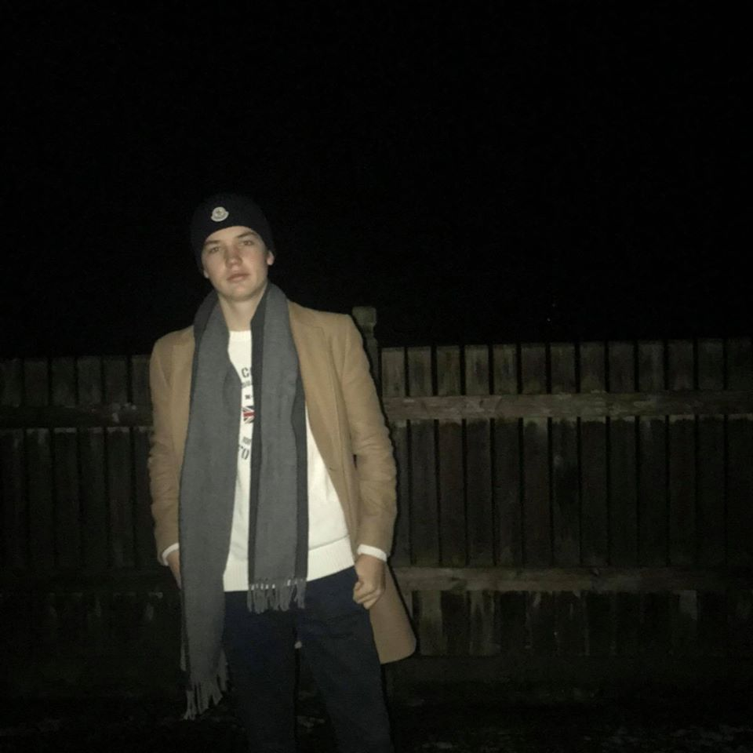

Skottsäker Jacka
Målgrupp: Polis och väktare
Designer/konstruktör: Alexander Frick
 



Idag använder sig poliser runt hela världen utav en skottsäker väst, material är olika men oftast någon form av plåt som är skyddad av ett tunt tyg för utseende och bekvämlighet. Min ide är att göra det enklare för poliserna, att ha en inbyggd väst i jackan som är tunn och bekväm och samtidigt väldigt tålig. Detta kommer underlätta för poliserna, inget som klämmer och inget att ta av och på. Den är alltid på och man märker den knappt.
Tanken om hur jag ska genomföra detta är att skapa en jacka, en jacka i normal storlek som ska vara skottsäker runt magen och bröstet samt sidorna och ryggen. Detta ska göras genom att fästa in Dyneema som är världens starkaste fiber, detta är tunnare och är bekvämare att bära, detta gör att det blir enklast att inplantera i en jacka utan att den ska bli obekväm. Funktion ska vara på topp, därav valde jag att försöka använda ett material som är tunt populärt och lätt att röra sig i. Detta gör att den polisen som använder jackan inte behöver vänja sig någon längre tid utan mest testa och sen köra och ingen jobbig period där man måste vänja sig vid jackan.
Dyneema är ett sorts kolfiber som är världens starkaste fiber som gör det till skott tåligt och skottsäkert ifall den är tillräckligt tjock. Eftersom det är så pass tunt som start och lätt att böja gör det att det är lättare att röra sig i det. Därför är iden att stoppa fibern framför fodringen i jackan.
Bredden på materialet är 9mm.
Tanken är att placera ut västen i denna jacka som polisen redan använder i nuläget, och ovanstående är materialet Dyneema som används till västarna.
Funktioner
• Skottsäker
• Låg vikt
• Rörligt
Materiallista
• Dyneema
• Begagnad Polisjacka
Arbetsbeskrivning
Personlig Information
Hej mitt namn är Alexander Frick och jag går Teknisk linje på Thoren Innovations School,jag går inriktningen design och produktutveckling och går i årskurs 2. Jag har under två årjobbat som truckförare på lager där jag även införskaffat mig truckkörkort. När det kommertill hobbys brukar jag tycka om att spela dator, även köra motorcykel är en stor hobby sombrukar ta mycket av min tid på sommaren.
Tidigare har jag jobbat mycket med Google sketchup där jag delvis ritat upp lägenheter samtmitt eget sovrum. Har även i ett projekt under förra läsåret gjort ett flygplan med 4 andra iskolan. Ett flygplan med ungefär en vingbredd på 1 meter, detta flygplan började vi med attskriva ut papper på A4 och skar sedan ut detta på ett hårdare material som vi sedan satte ihoptill ett skeletten till planet. Därefter gjorde vi papper mache runt planet och fixade motorer påbatteri och lyckades även lyfta med planet, detta la vi ner mycket tid på från vår fritid samtskoltid där det tog ca 11 veckor att göra klart planet.
Jag har ett stort intresse för CAD system även om jag inte kan dem alla, jag tycker det är en
rolig sysselsättning att hålla på med. Mina styrkor är att jag gör om och om tills jag är nöjd.
Något jag skulle vilja lära mig mer om är CAD program, redigering program till bilder samt
mer om hur en 3D skrivare fungerar. Då jag tycket CAD är kul hade det varit roligt att lära sig
svårare program för att kunna göra svårare grejer, samt hade det varit kul att kunna redigera
bra bilder för att kunna presentera något snyggt redigerat till en idé. Jag tror även att 3D
skrivare är mycket utav vår framtid därav hade de varit bra att kunna mer om det samtidigt
som det är väldigt intressant att kunna rita upp något på datorn och sedan få ut det i plast
format.
Mina framtidsplaner är att arbeta mer med program som CAD, att skissa, designa och
konstruera något hade varit något som jag gärna hade arbetat med mer i framtiden. Samt att
arbeta på ett hållbart sätt då jag personligen tycker det är viktigt med en hållbar utveckling.